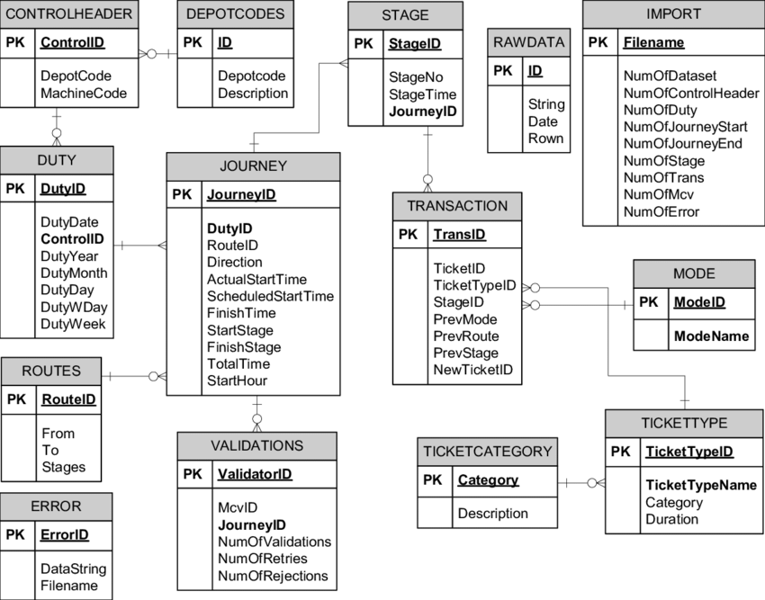

ClubRunner is een innovatief platform dat sporters in staat stelt om zich aan te melden voor evenementen, trainingsgroepen te vinden en hun sportieve prestaties bij te houden.
Deze sectie beschrijft de functionele aspecten die ClubRunner gebruikers biedt.
| Nr. | Vereiste | Toelichting |
|---|---|---|
| 1 | De gebruiker kan lijst zien van evenementen binnen de club. | Gebruikers kunnen evenementen bekijken in een lijstweergave, gesorteerd op datum en tijd. |
| 2 | De gebruiker kan zich aanmelden voor een evenement. | Gebruikers kunnen zich inschrijven door op de 'Aanmelden'-knop te klikken bij het gewenste evenement. |
| 3 | De gebruiker kan aanbevolen gebruikers zien die overeenkomen met zijn voorkeuren en snelheid. | Er wordt een lijst met aanbevolen gebruikers getoond op basis van voorkeursafstand en gemiddelde snelheid. |
| 4 | Gebruikers kunnen zich afmelden voor een evenement waarvoor zij zich eerder hebben aangemeld. | Gebruikers kunnen zich afmelden door op de 'afmelden'-knop te klikken bij het evenement waarvoor zij zich eerder hebben aangemeld. |
onderweg
Hieronder is het entiteit-relatie diagram (ERD) te zien dat de structuur van de ClubRunner-database weergeeft.
